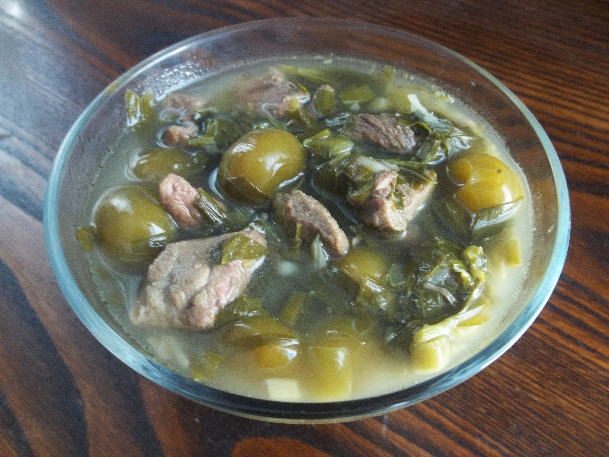

Chakapuli

Ingredients
- 1.5 kg lamb
- 2 bunches Tarragon
- 1 bunch Coriander
- 1 bunch parsley
- 1 bunch scallions
- 100 g green sour plums (tkemali)
- 2 cloves garlic, minced
- 2 cup dry white wine
- salt to taste
Directions
- Cut a meat into small pieces and place it in the saucepan.
- Add sour plums, finely chopped herbs and garlic. Season with salt and pour white wine in it. Cover the pan and place it on a medium-low heat.
- Cook for about one hour, until the meat is tender.